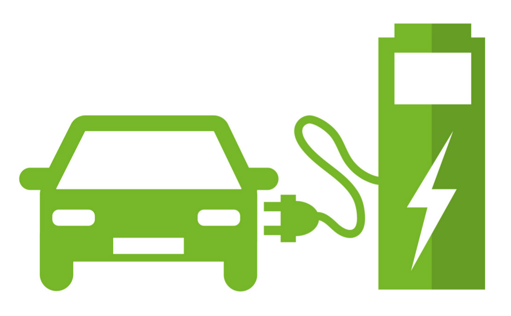

Description
Ce site permet d'étudier les données IRVE. C'est-à-dire des infrastructures conçues pour recharger les véhicules électriques. Vous pourrez visualiser les stations, consulter des statistiques par département et utiliser des modèles prédictifs pour trouver l'implantation et la puissance nominale d'une borne.
